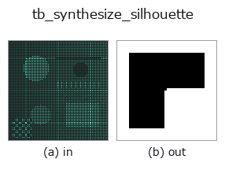

typed op• 資料種類:points → image
• 呼叫:fullseye.apply(img, "tb_synthesize_silhouette", a=0.5, b=0.5)(2-D 的模型是一張圖 + 兩個純量旋鈕 a,b∈[0,1])

*圖為在 128×128 合成輸入上實際執行的輸出。左為輸入，右為輸出。點雲以俯視散點顯示(亮度 = z)，一維序列為折線，體資料為沿 z 的最大值投影，影片為中間影格，複數影像為振幅；無法成像的回傳值直接顯示數值。*
*旋鈕 a 不改變輸出(實測: 0.1 / 0.5 / 0.9 相同)。*
*旋鈕 b 不改變輸出(實測: 0.1 / 0.5 / 0.9 相同)。*
階段(前置運算子 → 本運算子，由左至右):
▸ tb_synthesize_silhouette: 處理階段 (文件網站)
換別的影像(合成場景 / 照片 / 硬幣。上排為輸入，下排為對應輸出。旋鈕取預設):
▸ tb_synthesize_silhouette: 其他輸入影像 (文件網站)
將 3-D 點雲投影到 (K,R,t) 相機上，回傳被佔用像素為 True 的輪廓圖（H,W bool）。
用於 GT 產生。把 points (N,3) 用 X_cam = R X + t 投影,把 depth>0 且落在影像內的像素設為 True。稀疏點雲的投影像會有空洞,因此預設做填洞(fill, scipy.ndimage.binary_fill_holes),得到內部填滿的前景遮罩。再膨脹 dilate 個像素,做成「pixel 只要稍微碰到物體就算前景」這種覆蓋(coverage)意義上的剪影 — 這是為在離散化誤差下也保證 visual hull 的 recall(不漏掉物體 voxel) 而做的保守側取整。
points : (N, 3) array_like 世界座標的點雲(物體表面/內部的樣本)。
K : (3, 3) 內參。
R, t : (3, 3), (3,) 世界->相機的旋轉、平移。
size : (H, W) 輸出影像尺寸。
fill : bool 填補投影像的空洞使其成為 solid(預設 True)。
dilate : int 作為覆蓋餘量膨脹的像素數(預設 1,0 為無效)。
(H, W) bool ndarray 前景為 True 的剪影。
橋接到 2-D 演化登錄表的 3d op synthesize_silhouette。實作相同,只有呼叫慣例改為 op(v, a, b)。此 op 沒有可調點,a 與 b 都不使用。
• 範例資料目錄(下載 URL / 授權) —— 2-D 用 skimage.data(BSD/公有領域)加合成圖,3-D 給出真實資料源(Stanford/PDS 等)的下載 URL。
• 運算子來歷與參考文獻 —— 該運算子族所依據的研究/方法出處。
下面的程式已確認可以執行(與圖相同的輸入)。在 Studio 說明中，此區塊會變成按鈕，可當場載入並執行。
img_to_points 0.50 0.50 tb_synthesize_silhouette 0.50 0.50
下面的範例呼叫的是底層帳本運算子 synthesize_silhouette。此橋接運算子只是把同一實作適配為 fn(v, a, b) 慣例，行為完全相同(只是呼叫形式不同)。
• space_carving — py -3.11 examples_3d/space_carving.py
image 作為輸入)identity · gaussian · mean_box · bilateral · unsharp · median · min_filter · max_filter
typed)tb_points_to_voxel · tb_estimate_point_normals · tb_iss_keypoints · tb_project_points · tb_render_point_depth · tb_statistical_outlier_removal · tb_radius_outlier_removal · tb_voxel_grid_downsample
*Provenance: ops.py — 2D 運算子登記表。本條目由 tools/opdocs.py md 自動產生(請勿手動編輯)。*
© 2026 Kazufumi Furuse — Fullseye operator documentation. Licensed under Apache-2.0.